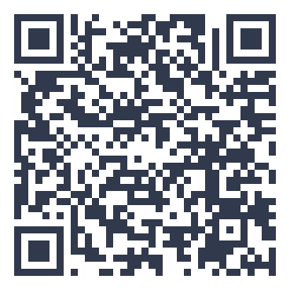

thuisitaliaans.com/esercizi/saluti-regionali-informali.html
Saluti regionali informali
Gira le carte per scoprire alcuni saluti informali usati in diverse regioni italiane.
📘 Saluti regionali
L'Italia ha molte varianti regionali informali per salutarsi, spesso influenzate dai dialetti locali.
Padroneggiare questo argomento ti aiuta a comunicare con sicurezza nelle situazioni più semplici e quotidiane. Questo esercizio allena il lessico legato alle persone e alla vita sociale, utile in moltissime conversazioni quotidiane.
Questo argomento fa parte del livello base del QCER (Quadro Comune Europeo di Riferimento per le lingue), il punto di partenza per chi inizia lo studio dell'italiano da zero.
Ripeti le carte più volte nei giorni successivi, anche a distanza di qualche giorno: la ripetizione distanziata nel tempo è uno dei metodi più efficaci per fissare il lessico nella memoria a lungo termine.
I saluti regionali aggiungono colore alla lingua
Scopriamo insieme le varianti regionali dell'italiano parlato.
Prenota una lezione gratuitaVuoi allenarti anche fuori dal sito?
Con l'app Ti hai un percorso QCER completo dall'A1 al C2, edicola tematica, romanzi graduati e un dizionario in 14 lingue.
Scopri l'app Ti →📖 Approfondisci con il blog: cultura italiana

{kind=link}